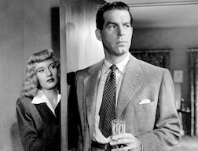

*** Welcome! Tired of Netflix? We get it. Here we provide you with three awesome movies to get you back on the right side of film. ***
Without further ado...
"How could I have known that murder could sometimes smell like honeysuckle?" -Walter Neff

"What we had in common - our restlessness, our impassioned spirits, and a love for the open road." - Ernesto
"Hey, there's even a fridge! You could put six packs of bee...soda in here.." -Tommy
*Flicks to put on the must watch list(from left to right): Double Indemnity, Motorcycle Diaries, Tommy Boy
Double Indemnity:
An insurance representative lets himself be talked into a murder/insurance fraud scheme that arouses an insurance investigator's suspicions.
Motorcycle Diaries:
The dramatization of a motorcycle road trip Che Guevara went on in his youth that showed him his life's calling.
Tommy Boy:
An incompetent, immature, and dimwitted heir to an auto parts factory must save the business to keep it out of the hands of his new, con-artist relatives and big business.